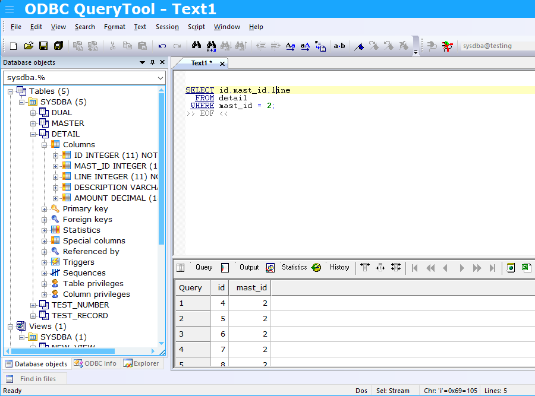

Finding the information for a single table in your query is easy. Just press F12 on top of the table name. In the next image, the table 'Detail' was selected.
But you can alsoo use the filter on top of the object tree, and then open up the various nodes of the tree.
